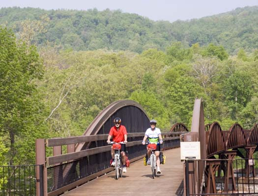

Bikes
Scroll down to see the places I've biked
Ohiopyle
Visit their website Scroll Down for More
Jim Thorpe
Visit their websiteScroll Down for More
Washington & Old Dominion Trail
Visit their websiteScroll Down for More
Delaware & Raritan Trail
Visit their websiteScroll Down for More